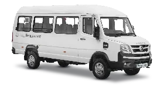

Manufacturer model reference9 seats
9-seater Tempo Traveller
A smaller group. A shared adventure.
For compact family trips and a close circle of friends. Share your luggage needs so the seating layout can be confirmed.
Vehicle, seating and amenities subject to confirmation.
Check Availability